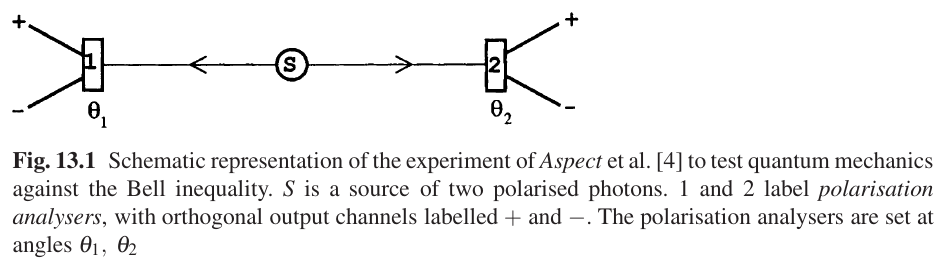
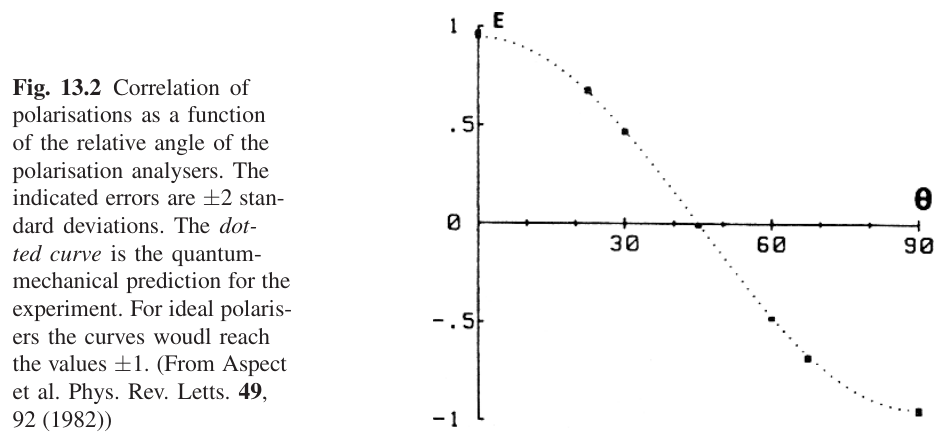
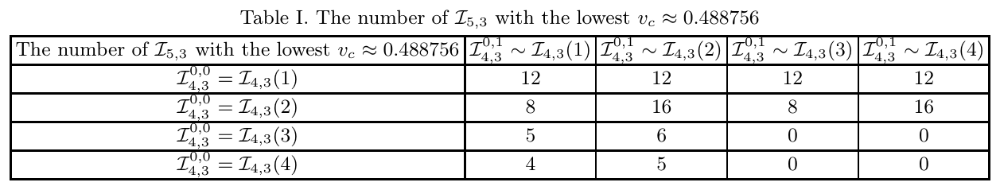
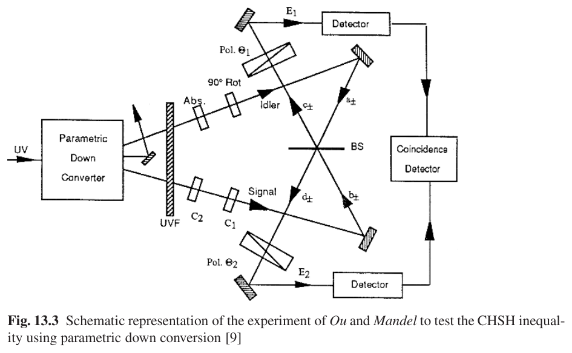
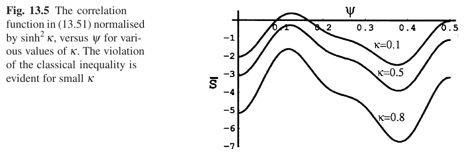
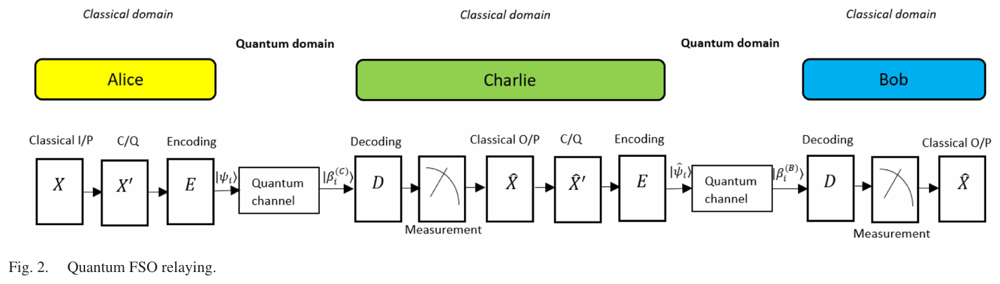
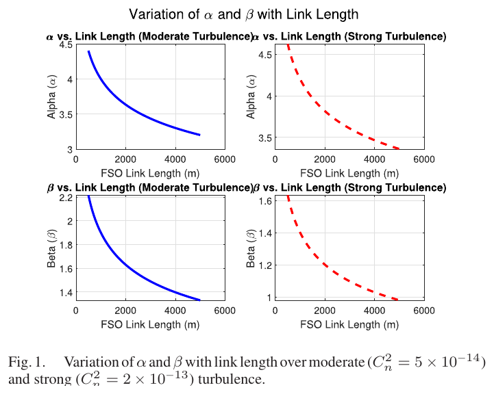
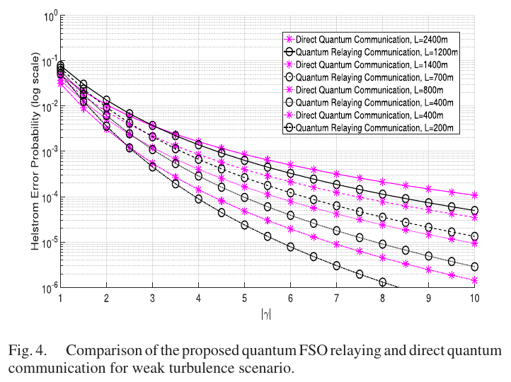
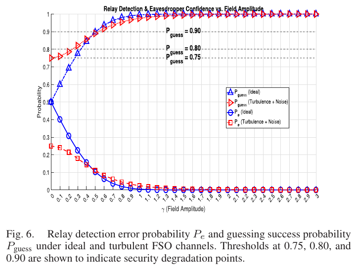
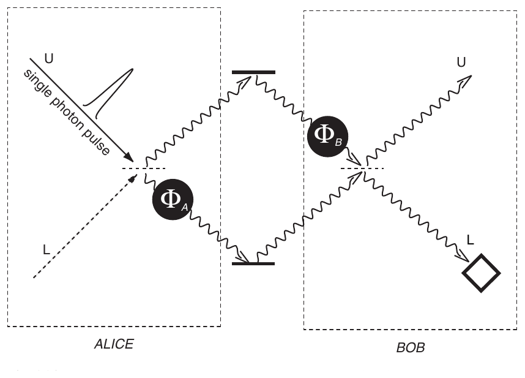

Module 01 · Bài báo nền tảng: hàm Bell nhiều thành phần và relay lượng tử FSO
Từ bất đẳng thức CHSH đến công thức lặp (n, 2, d) và vị trí của bài relay
- Phát biểu và tính được CHSH, biên 2 và \(2\sqrt2\)
- Giải thích công thức lặp (n, 2, d) và độ nhìn thấy tới hạn
- Phân biệt hai bài toán: kiểm tra Bell và phát hiện trạng thái Helstrom
- Nhận biết tệp bị đặt sai tên trong kho tài liệu
📚 Tài liệu nguồn của module (đã xác minh bằng nội dung từng file)
| File trong kho | Bài báo (đã xác minh bằng nội dung) | Trang | Trạng thái | Liên kết | Đã dùng vào module |
|---|---|---|---|---|---|
| 2311.03681v1.pdf | The Iteration Formula of (n, 2, d) Full-correlated Multi-component Bell Function and Its Applications Hui-Xian Meng, Yu Zhang, Xing-Yan Fan, Jie Zhou, Wei-Min Shang, Jing-Ling Chen · 2023 · arXiv:2311.03681v1 [quant-ph] | 23 | Đã đọc, khớp tên bài | DOI · arXiv | Hàm Bell nhiều thành phần, công thức lặp, bảng v_c. Đã đọc toàn bộ. |
| Đọc và tái lập Quantum_Relay-Assisted_Free-Space_Optical_Communication.pdf | Quantum Relay-Assisted Free-Space Optical Communication Manav R. Bhatnagar, M. K. Arti, Kushagra Bhatnagar · 2025 · IEEE Photonics J. 17(3), 2000215 | 15 | Đã đọc, khớp tên bài | DOI | Chỉ giới thiệu tổng quan, chi tiết ở module m03. Đã đọc các mục I-IV, VI, IX. |
| publication_12_7688_39.pdf | Quantum Optics (tên tệp không khớp: thực chất là sách, không phải bài báo) D. F. Walls, Gerard J. Milburn · 2008 · Springer, 2nd edition (ISBN 978-3-540-28573-1) | 424 | Đọc một phần (sách dài) | Chưa có liên kết công khai (lấy file ở thư mục chung của nhóm) | Tệp bị đặt tên không liên quan nội dung. Có lớp chữ nên trích được. Đã đọc 2.3-2.5, 13.1-13.4, 16.2 và mục lục. |
Bài giảng (slide)
Dùng phím ← → hoặc nút bấm; nút ⛶ để trình chiếu toàn màn hình.
Nghịch lý EPR và cặp photon tương quan

Nguồn: Walls & Milburn, Quantum Optics, 2nd ed., Springer 2008, Fig. 13.1, tr. 249
- \(a_\pm,b_\pm\)toán tử huỷ cho mode phân cực ngang (+) và dọc (−) tới máy 1 và máy 2
- \(|n_1,n_2,n_3,n_4\rangle\)số photon trong bốn mode \(a_+,a_-,b_+,b_-\)
Trạng thái coherent và độ chồng lấn
Trạng thái coherent \(|\alpha\rangle\) (trạng thái kết hợp, thường gặp ở chùm laser) có phân bố Poisson về số photon. Hai trạng thái coherent không trực giao, nên không phân biệt hoàn hảo được; điều này sẽ quay lại ở bài relay (phần 5).
- \(\bar n=|\alpha|^2\)số photon trung bình
- \(|\langle\beta|\alpha\rangle|^2\)độ chồng lấn bình phương, giảm theo bình phương khoảng cách
| Cặp trạng thái | \(|\langle\beta|\alpha\rangle|^2\) |
|---|---|
| \(\alpha=0,5,\ \beta=-0,5\) | 0,3679 |
| \(\alpha=1,\ \beta=-1\) | 0,0183 |
| \(\alpha=1,5,\ \beta=-1,5\) | 0,000123 |
Giả thiết cục bộ trong lý thuyết biến ẩn
- \(\lambda\)biến ẩn, chỉ biết phân bố \(\rho(\lambda)\)
- \(S_i=\dfrac{I_i^+-I_i^-}{I_i}\)hàm đáp ứng của máy \(i\), bị chặn \(|S_i|\le 1\)
- \(f=\rho I_1I_2\)trọng số, \(N=\int f\,d\lambda\) là hằng chuẩn hoá
Giả thiết cục bộ (13.8): đáp ứng của máy 1 không phụ thuộc góc \(\theta_2\) đặt ở máy 2. Với giả thiết này, hệ số tương quan tách thành tích hai hàm một biến.
Bất đẳng thức CHSH từ giả thiết cục bộ
- \(E(\theta_1,\theta_2)\)hệ số tương quan khi hai máy đặt ở góc \(\theta_1,\theta_2\)
- \(2\)biên cục bộ (Eq. 13.19)
- Viết hiệu \(E(\theta_1,\theta_2)-E(\theta_1,\theta_2^{\prime})\) dưới dạng tích phân của \(f S_1 S_2[1\pm S_1^{\prime} S_2^{\prime}]\) (Eq. 13.18).
- Dùng \(|S_i|\le1\) để chặn trị tuyệt đối bởi \(2\pm[E(\theta_1^{\prime},\theta_2^{\prime})+E(\theta_1^{\prime},\theta_2)]\).
- Chuyển vế, được |B| ≤ 2.
Cơ học lượng tử vi phạm CHSH

Nguồn: Walls & Milburn, Quantum Optics, 2nd ed., Springer 2008, Fig. 13.2, tr. 253
- \(B(22,5^\circ)=2\sqrt2\)vi phạm CHSH: \(2\sqrt2\approx2{,}828>2\)
Số liệu thực nghiệm kiểu Aspect
- \(T^+,T^-\)độ truyền qua kênh (+) và (−) của máy phân tích
- \(F\)hệ số hình học do góc khối hữu hạn
| Đại lượng | Giá trị | Nguồn |
|---|---|---|
| \(T_1^+=R_1^-\) | 0,950 | tr. 253 |
| \(T_1^-=R_1^+\) | 0,007 | tr. 253 |
| \(T_2^+=T_2^-\) | 0,930 | tr. 253 |
| B lượng tử tại ψ = 22,5° | 2,7 | tr. 253 |
| B quan sát | 2,697 ± 0,015 | tr. 253 |
| Tự tính \(2\sqrt2\times\)hệ số | 2,701 | data/verify/m01_verify.py |
Kịch bản (n, 2, d) và vector kết quả
- \(\mathbf v_k\)vector đơn vị \(N\) chiều gán cho kết quả \(k\), \(\mathbf v_0=(1,0,\dots,0)\)
- \((n,k,d)\)\(n\) bên, \(k\) thiết lập đo mỗi bên, \(d\) kết quả
| \(d\) | \(\mathbf v_0\) | \(\mathbf v_1\) |
|---|---|---|
| 2 | \((1)\) | \((-1)\) |
| 3 | \((1,0)\) | \(\bigl(-\tfrac12,\tfrac{\sqrt3}{2}\bigr)\) |
| 4 | \((1,0,0)\) | \(\bigl(-\tfrac13,\tfrac{2\sqrt2}{3},0\bigr)\) |
Với \(d=3\) thì \(N=2\) và \(\mathbf v_0,\mathbf v_1,\mathbf v_2\) là ba đỉnh tam giác đều; với \(d=2\) chỉ còn \(\pm1\) như hệ số CHSH.
Dòng thời gian: từ Bell đến công thức lặp và relay FSO
Đường nét đứt: ảnh hưởng ý tưởng; nét liền: phụ thuộc trực tiếp. Mốc lấy từ danh mục tham khảo của ba tài liệu: Bell 1964 [3], CHSH 1969 [4], Mermin 1990 [5], Belinskiĭ–Klyshko 1993 [7], CGLMP 2002 [9], Chen 2005 [12], Meng 2022 [30] (arXiv 2311.03681); Aspect 1982 và Helstrom 1969 (Walls–Milburn; Bhatnagar [56]); Dolinar 1973 [61], Andrews–Phillips 2005 [44] (Bhatnagar 2025).
Hàm tương quan đa thành phần
- \(\mathbf v_a\circ\mathbf v_b=\mathbf v_{\bmod(a+b,d)}\)"tích" các vector là cộng kết quả theo modulo \(d\)
- \(P(A_i+\cdots=t)\)xác suất trùng (coincidence): tổng các kết quả \(\equiv t\pmod d\)
- \(\vec Q=(Q^{(0)},\dots,Q^{(d-2)})\)\(d-1\) thành phần
Eq. (3), Meng et al., arXiv:2311.03681, 2023, tr. 2. Với \(d=2\) chỉ có một thành phần và hệ số tương quan quay về \(\langle A_iB_j\rangle\) của CHSH.
Hàm Bell đầy đủ tương quan
- \(\omega\)hệ số thực, tổ hợp tuyến tính của \(\mathbf v_0,\dots,\mathbf v_N\)
- \(L\)cận trên trong lý thuyết biến ẩn cục bộ (LHV)
- \(Q^{(0)}\)thành phần đầu của \(\vec Q\)
Eq. (4)-(5), Meng et al., arXiv:2311.03681, 2023, tr. 2. Lượng \(B_{n,d}\) chính là dạng xác suất trùng, tổng quát hoá bất đẳng thức \((3,2,3)\) của tài liệu [11] trong bài.
Biểu diễn projector bằng observable
- \(\Pi_i\)projector hạng một của một ONB (cơ sở trực chuẩn)
- \(v_0=1\)thành phần đầu của \(\mathbf v_0\)
- \(d\ \text{nguyên tố}\)cần để ma trận hệ \(v_{\bmod(jt,d)}\) khả nghịch
Appendix A, Meng et al., arXiv:2311.03681, 2023, tr. 3 và 9. Phép chứng minh giải hệ \((A1)\) bằng ma trận Vandermonde-Fourier trên \(\mathbb Z_d\).
Công thức lặp cho (n, 2, d)
- \(\mathcal I^{0,0},\mathcal I^{0,1}\)hai hàm Bell \((n-1,2,d)\) đầy đủ tương quan
- \(C_0,C_1\)hai observable của bên thứ \(n\)
Eq. (11), Meng et al., arXiv:2311.03681, 2023, tr. 3-4. Từ \(\mathcal I_{n,d}=\sum_{k_0,k_1}\mathcal I^{k_0,k_1}_{n-1,d}\Pi_{k_0}\Pi^{\prime}_{k_1}\) (Eq. 10). Với \(d=2\): \(\sum_k kv_k=\sum_k(d-k)v_k=v_1\).
Công thức lặp khôi phục MABK
- \(v_1=-1\)với \(d=2\) kết quả chỉ là \(\pm1\)
- \(X_0\leftrightarrow X_1\)đổi hai thiết lập đo của mọi bên đã có
| \(n\) | Cực đại lượng tử / LHV | \(v_c=\mathrm{LHV}/\mathrm{QM}\) | Dạng tổng quát |
|---|---|---|---|
| 2 | 1,414 | 0,7071 | \(2^{(n-1)/2}\) |
| 3 | 2 | 0,5 | \(2^{(n-1)/2}\) |
| 4 | 2,828 | 0,3536 | \(2^{(n-1)/2}\) |
Eq. (12), Meng et al., arXiv:2311.03681, 2023, tr. 4. Ba hàng bảng được tự kiểm bằng tối ưu số với trạng thái GHZ (data/verify/m01_verify.py).
Độ nhìn thấy tới hạn làm thước đo độ bền
- \(|\Psi\rangle=\tfrac1{\sqrt d}\sum_j|j\rangle^{\otimes n}\)trạng thái GHZ \(n\) qudit
- \(NL_{|\Psi\rangle},NL_I\)cực đại lượng tử của \(B_{n,d}\) trên \(|\Psi\rangle\) và trên nhiễu trắng \(I/d^n\)
- \(v_c\)càng nhỏ càng bền với nhiễu
tr. 4, Meng et al., arXiv:2311.03681, 2023. Hai bất đẳng thức tương đương có cùng \(v_c\). Đây là thước đo duy nhất bài dùng để so sánh các hàm Bell.
Máy tách chùm đối xứng (d×2 cổng)
- \(\vec\phi=(\phi_0,\dots,\phi_{d-1})\)vector pha cho mỗi phép đo (macroscopic local parameter)
- \(U_{QFT}U(\vec\phi)\)phép đo = pha rồi biến đổi Fourier lượng tử rồi đo cơ sở tính
Eq. (13), Meng et al., arXiv:2311.03681, 2023, tr. 4. Công thức dành cho trạng thái GHZ cực đại. (Dấu tổng như in trong bản trích văn bản; xem Eq. 13 bản gốc trước khi tái lập số.)
Ví dụ số: S = 2√2 với bốn góc chuẩn
- \(S\)\(S=E(a,b)-E(a,b')+E(a',b)+E(a',b')\)
| Cặp | Góc lệch | \(E=\cos2\Delta\) | Dấu |
|---|---|---|---|
| \((a,b)\) | 22,5° | 0,7071 | + |
| \((a,b\')\) | 67,5° | -0,7071 | − |
| \((a\',b)\) | 22,5° | 0,7071 | + |
| \((a\',b\')\) | 22,5° | 0,7071 | + |
Tổng: \(S=0,7071+0,7071+0,7071+0,7071=2,828\) lớn hơn \(2\) tới \(41\%\).
B theo góc ψ và điểm cực đại
- \(\psi\)góc lệch cơ sở của dãy bốn góc cách đều
| \(\psi\) | \(B(\psi)\) | So với 2 |
|---|---|---|
| 0° | 2,0000 | không vi phạm |
| 10° | 2,3191 | vi phạm |
| 15° | 2,5981 | vi phạm |
| 22,5° | 2,8284 | vi phạm |
| 30° | 2,5000 | vi phạm |
| 45° | 0,0000 | không vi phạm |
Ngưỡng nhiễu của CHSH
- \(v\)độ nhìn thấy (visibility) của cặp photon
| \(v\) | \(S(v)\) | Kết luận |
|---|---|---|
| 1,00 | 2,8284 | vi phạm |
| 0,90 | 2,5456 | vi phạm |
| 0,80 | 2,2627 | vi phạm |
| 0,71 | 2,0000 | LHV giải thích được |
| 0,70 | 1,9799 | LHV giải thích được |
| 0,50 | 1,4142 | LHV giải thích được |
Đây là \(v_c\) của CHSH \((n=2,d=2)\); các tập tin sau (phần 3) cho \(v_c\) thấp hơn khi tăng \(n\) hoặc \(d\).
Ví dụ (3, 2, 3): v_c = 0,6
- \(B_{3,3}(1)\le1\)cận LHV \(L=1\) của dạng xác suất trùng
Eq. (14), Meng et al., arXiv:2311.03681, 2023, tr. 4. Lớp tương đương của \(\mathcal I_{2,3}\) có 54 phần tử; lớp của \(\mathcal I_{3,3}(1)\) có 648 phần tử. Công thức lặp tìm được bốn hàm \(\mathcal I_{3,3}(1\text{-}4)\) có cùng \(v_c=0,6\).
Ví dụ (4, 2, 3) và (5, 2, 3)
- \(NL_{|\Psi\rangle}=2\)cực đại lượng tử cho \((4,2,3)\), \(NL_I=0\)

Nguồn: Meng et al., arXiv:2311.03681, 2023, Table I, tr. 6
Có 16 hàm \(\mathcal I_{4,3}\) bền nhất; sau kiểm tra tương đương còn bốn hàm không tương đương nhau (Eq. 15-16).
Ví dụ d = 5 và d = 7
| \((n,2,d)\) | \(v_c\) | Ghi chú | Vị trí |
|---|---|---|---|
| \((2,2,5)\) | 0,687157 | bằng CGLMP \(d=5\) | Eq. (19)-(20) |
| \((3,2,5)\) | 0,595047 | khớp bất đẳng thức [13] của bài | Eq. (21) |
| \((4,2,5)\) | 0,595047 | cùng \(v_c\) với \((3,2,5)\) | tr. 7 |
| \((2,2,7)\) | 0,6832567 | bằng CGLMP \(d=7\); thêm ba hàm không tương đương | Eq. (22)-(23) |
Kết quả đáng chú ý: công thức lặp không tìm được hàm bền hơn, nhưng sinh được các hàm cùng \(v_c\) mà không tương đương với hàm đã biết.
Ví dụ số: sai số hai chặng từ cận Helstrom
- \(\bar n=\gamma^2\)số photon trung bình, \(\gamma\) là biên độ
| \(\bar n\) | \(P_e^{\min}\) | \(P_e\ (2\ \text{chặng})\) |
|---|---|---|
| 0,25 | 0,1025 | 0,1839 |
| 0,50 | 0,03506 | 0,06767 |
| 1,00 | 0,0046 | 0,009158 |
| 2,00 | 8,387e-05 | 0,0001677 |
Giả định hai chặng giống nhau và kênh không nhiễu loạn (minh hoạ); khi \(P_{e,1}=P_{e,2}=0,05\) thì \(P_e=0,095\).
Giới hạn của trạng thái cổ điển và coherent
- \(P(\boldsymbol\alpha)\)biểu diễn P Glauber–Sudarshan của trạng thái trường
- \(\gamma_\pm,\delta_\pm\)biên độ c-number sau phép quay phân cực (13.20)
Mọi trạng thái có P-representation dương và chuẩn hoá được (kể cả trạng thái coherent) thoả \(|B|\le2\). Muốn vi phạm phải dùng trạng thái phi cổ điển như cặp photon vướng víu, Eq. (13.21)-(13.25), Walls & Milburn, Quantum Optics, 2nd ed., Springer 2008, tr. 252.
Bất đẳng thức Clauser–Horne và thí nghiệm Ou–Mandel

Nguồn: Walls & Milburn, Quantum Optics, 2nd ed., Springer 2008, Fig. 13.3, tr. 254
- \(P(\theta_1,\theta_2)=\tfrac\eta4\sin^2(\theta_1+\theta_2)\)xác suất đếm trùng, máy tách chùm 50/50 (Eq. 13.38)
- \(\eta\)hệ số truyền của bộ suy giảm trên nhánh idler
Nguồn tham số mạnh làm mất vi phạm

Nguồn: Walls & Milburn, Quantum Optics, 2nd ed., Springer 2008, Fig. 13.5, tr. 259
- \(\kappa\)tham số nén/khuếch đại tham số (độ mạnh nguồn)
Khi \(\kappa\gg1\) hàm tương quan trùng dự đoán cổ điển (13.44), nên không vi phạm. Chỉ vùng \(\kappa\ll1\) (gần một cặp photon) mới có vi phạm, cực đại tại \(\psi=\pi/8\).
Lớp tương đương và hàm không tương đương
- \(\bar0=1,\bar1=0\)đổi hai thiết lập (observable symmetry)
- \(v_{a}\)gán lại nhãn kết quả (outcome symmetry)
\(\mathcal I_{5,3}(1)\) có hệ số \(-4\mathbf v_1\) còn \(\mathcal I_{5,3}(2)\) thì không. Phép đối xứng chỉ đổi \(\omega\) thành \(\omega v_1\) hoặc \(\omega v_2\) nên hai hàm này không tương đương dù cùng \(v_c\approx0,488756\) (Eq. 17-18).
Định nghĩa tương đương theo Masanes (ref. [24] của bài): hoán đổi bên, hoán đổi thiết lập, đổi nhãn kết quả. Kiểm tra tương đương cho \(n=5\) vượt khả năng tính toán của tác giả.
Phạm vi áp dụng của công thức lặp
| Tình huống | Công thức lặp áp dụng? |
|---|---|
| \(d=2,3,5,7\) | Có (d nguyên tố) |
| \(d=4,6\) | Không, chứng minh dùng tính nguyên tố của \(d\) |
| \(k=3\) | Chưa, tác giả nêu như hướng tương lai |
| Số hạng không đầy đủ tương quan | Không nằm trong \(\mathcal I_{n,d}\) |
Bài chỉ nói các hàm tìm được bằng công thức lặp bền ngang các bất đẳng thức đã biết cho các cấu hình đã duyệt. Bài không chứng minh tối ưu tổng quát; tác giả viết rõ "chưa tìm thấy hàm bền hơn".
Kiểm chứng công thức trước khi dùng
- \(c_\pm,d_\pm\)mode sau phép quay phân cực (13.5)
Eq. (13.5d) trong bản in của Walls & Milburn, Quantum Optics, 2nd ed., Springer 2008 (tr. 249) ghi \(b_-\sin\theta_2\); phép quay trực giao đòi \(b_-\cos\theta_2\), như (13.5b). Tự kiểm: \(|c_+|^2+|c_-|^2\) phải bằng \(|a_+|^2+|a_-|^2\), điều (13.22) cần dùng.
Tương tự, ở bài relay (Bhatnagar 2025) công thức Rytov và \(\alpha,\beta\) cần đối chiếu số in với kết quả tính (xem m03).
Relay decode-and-forward trong bức tranh chung

Nguồn: Bhatnagar, Arti, Bhatnagar, IEEE Photonics J. 17(3), 2025, Fig. 2, tr. 4
- \(P_{e,1},P_{e,2}\)xác suất lỗi nhỏ nhất của chặng Alice→Charlie và Charlie→Bob, đã lấy trung bình theo fading và nhiễu
Eq. (12), tr. 5. Chi tiết công thức, hình và mô phỏng nằm ở module m03; ở đây chỉ định vị bài trong bức tranh chung.
Fading Gamma-Gamma theo chiều dài tuyến

Nguồn: Bhatnagar, Arti, Bhatnagar, IEEE Photonics J. 17(3), 2025, Fig. 1, tr. 4
- \(k=2\pi/\lambda\)số sóng
- \(K_\nu\)hàm Bessel biến đổi loại hai
Eq. (10)-(11), tr. 5: \(\sigma_R^2\propto L^{11/6}\). Với \(C_n^2=5\times10^{-14}\), \(\lambda=1550\) nm, \(L=1000\) m ta tính được \(\sigma_R^2\approx0,995\) (data/verify/m01_verify.py).
Cận Helstrom: điểm nối với hàm Bell
- \(\rho_i\)trạng thái mật độ nhận được sau fading và nhiễu
- \(\|\cdot\|_1\)chuẩn vết (tổng trị tuyệt đối trị riêng)
| \(\gamma\) | \(e^{-4\gamma^2}\) | \(P_e^{\min}\) |
|---|---|---|
| 0,5 | 0,3679 | 0,1025 |
| 0,707 | 0,1353 | 0,03506 |
| 1 | 0,01832 | 0,0046 |
| 1,5 | 0,0001234 | 3,085e-05 |
Eq. (3), (41), tr. 3 và 10. Bảng dùng kênh lý tưởng (Eq. 41). Kênh nhiễu loạn có thêm tích phân theo \(I\) và nhiễu cộng (Eq. 36-39).
Hiệu năng relay so với kết nối trực tiếp

Nguồn: Bhatnagar, Arti, Bhatnagar, IEEE Photonics J. 17(3), 2025, Fig. 4, tr. 9
tr. 9: Charlie đặt chính giữa nên mỗi chặng dài một nửa. Ở biên độ rất thấp, lỗi tại relay lấn át và kết nối trực tiếp cho kết quả tốt hơn.
Rò rỉ thông tin tại relay

Nguồn: Bhatnagar, Arti, Bhatnagar, IEEE Photonics J. 17(3), 2025, Fig. 6, tr. 10
- \(P_{guess}\ge0,75;0,80;0,90\)các ngưỡng bảo mật minh hoạ trong hình
Eq. (41)-(43), tr. 10. Relay không đáng tin có thể "nghe lén" tốt hơn trong kênh nhiễu loạn có nhiễu ở biên độ thấp; đó là điểm yếu tác giả nêu rõ (Observation 2).
So sánh hai hướng: hàm Bell và relay FSO
| Khía cạnh | Hàm Bell nhiều bên | Relay FSO coherent state |
|---|---|---|
| Câu hỏi | Có tương quan phi cổ điển không? | Sai số nhỏ nhất khi đoán bit? |
| Trạng thái | GHZ vướng víu \(n\) qudit | hai trạng thái coherent \(|{\pm}\gamma\rangle\) |
| Đại lượng then chốt | \(v_c=\dfrac{L-NL_I}{NL_\Psi-NL_I}\) | \(P_e^{\min}=\tfrac12\bigl(1-\sqrt{1-e^{-4\gamma^2}}\bigr)\) |
| Nhiễu | nhiễu trắng \(I/d^n\) | fading Gamma-Gamma và nhiễu Gauss cộng |
| Tác giả nêu ứng dụng | quantum communication [45], quantum network [47-51] | mạng FSO lượng tử quy mô lớn |
Cả hai hướng đều quy về cách các trạng thái "chồng lấn" nhau; hàm Bell đo tương quan giữa các bên, Helstrom đo khả năng phân biệt giữa các trạng thái của cùng một bên.
Sách giáo trình trong thư mục: những chương dùng được

Nguồn: Walls & Milburn, Quantum Optics, 2nd ed., Springer 2008, Fig. 16.3, tr. 314
| Chương (Walls–Milburn) | Nội dung đã đọc | Trang in |
|---|---|---|
| 2.3-2.5 | Coherent state, squeezed state (nền cho trạng thái dùng ở bài relay) | 12-18 |
| 13.1-13.3 | EPR, CHSH, Clauser–Horne, nguồn tham số | 247-259 |
| 16.2 | QKD, B92 hai trạng thái không trực giao | 312-317 |
Tổng kết module
| Ý chính | Công thức then chốt |
|---|---|
| CHSH có biên cục bộ 2 và biên lượng tử \(2\sqrt2\) | \(B=3\cos2\psi-\cos6\psi\) |
| Mỗi bên thêm vào nhân vi phạm \(\sqrt2\) (d = 2) | \(v_c=2^{-(n-1)/2}\) |
| Công thức lặp dựng n bên từ hai hàm (n−1) bên (d nguyên tố) | \(\mathcal I_{n,d}=\tfrac1d(\mathcal I^{0,0}\ \mathcal I^{0,1})M(C_0\ C_1)^T\) |
| Độ bền đo bằng độ nhìn thấy tới hạn | \(v_c=\tfrac{L-NL_I}{NL_\Psi-NL_I}\) |
| Relay hai chặng tách sai số thành hai cận Helstrom | \(P_e\approx P_{e,1}(1-P_{e,2})+(1-P_{e,1})P_{e,2}\) |
Các tỉ số MABK \(\sqrt2,2,2\sqrt2\) và \(B(22,5^\circ)=2\sqrt2\) được tối ưu số trong data/verify/m01_verify.py; widget m01_chsh, m01_mabk, m01_relay dùng cùng công thức.
Nội dung chi tiết
Ví dụ 1 (quang học): tính CHSH tại 22,5°
- Chọn \(a=0^\circ,a'=45^\circ,b=22{,}5^\circ,b'=67{,}5^\circ\).
- Mỗi \(E=\cos2\Delta\): \(\cos45^\circ=0{,}7071\) cho ba cặp, \(\cos135^\circ=-0{,}7071\) cho cặp \((a,b')\).
- \(S=0{,}7071-(-0{,}7071)+0{,}7071+0{,}7071=2{,}828\).
Ví dụ 2 (viễn thông quang): độ nhìn thấy tối thiểu
- Liên kết photon có độ nhìn thấy đo được \(v=0{,}75\) (minh hoạ).
- \(S=2\sqrt2\cdot0{,}75=2{,}121\).
- \(2{,}121>2\) nên liên kết vẫn chứng nhận được vi phạm Bell; nếu \(v=0{,}65\) thì \(S=1{,}838<2\) và không chứng nhận được.
Ví dụ 3 (tài chính/giả định): ngưỡng nhiễu n bên
- (Giả định) Một mạng cảm biến phân tán có nhiễu trắng tới 35% (\(v=0{,}65\)).
- MABK: \(v_c=2^{-(n-1)/2}\). Với \(n=2\): \(0{,}707>0{,}65\), không phát hiện được.
- Với \(n=3\): \(v_c=0{,}5<0{,}65\), phát hiện được. Tăng số bên cứu được bài toán.
Ví dụ 4 (xác suất): cận Helstrom của hai trạng thái coherent
- \(\bar n=\gamma^2=0{,}5\): \(e^{-4\bar n}=e^{-2}=0{,}1353\).
- \(\sqrt{1-0{,}1353}=0{,}9299\).
- \(P_e^{\min}=\tfrac12(1-0{,}9299)=0{,}0351\).
Ví dụ 5 (mạng): hai chặng relay
- Hai chặng đều có \(P_{e,1}=P_{e,2}=0{,}01\) (minh hoạ).
- \(P_e=0{,}01\cdot0{,}99+0{,}99\cdot0{,}01=0{,}0198\).
- Gần gấp đôi một chặng; relay chỉ có lợi nếu mỗi chặng thấp hơn nhiều so với kết nối trực tiếp.
Ví dụ 6 (y sinh, giả định): QKD qua cáp quang
- (Giả định) Bệnh viện dùng B92 với hai trạng thái không trực giao, \(|\langle\psi_0|\psi_1\rangle|^2=0{,}1\).
- \(P_e^{\min}=\tfrac12(1-\sqrt{0{,}9})=0{,}0257\).
- Eve không thể phân biệt hoàn hảo hai trạng thái, nên mọi lần nghe lén đều để lại dấu vết thống kê (Walls–Milburn, 16.2).
Bối cảnh lý thuyết và lịch sử
Bell (1964) chỉ ra rằng bất kỳ lý thuyết biến ẩn cục bộ nào cũng cho các tương quan bị chặn; CHSH (1969) đưa chặn đó về dạng kiểm được trong phòng thí nghiệm; Aspect (1982) đo được \(B=2,697\pm0,015\), vượt xa 2. Từ đó nhiều nhóm mở rộng sang nhiều bên (Mermin, Ardehali, Belinskiĭ–Klyshko) và nhiều kết quả (CGLMP). Bài của Meng và cộng sự (2023) đóng góp một công thức lặp dựng hàm Bell \(n\) bên từ \(n-1\) bên.
Có 12 hàm \(\mathcal I_{5,3}\) đạt \(v_c\approx0{,}488756\) khi hai đầu vào đều thuộc lớp của \(\mathcal I_{4,3}(1)\).
Bẫy khi làm bài
- Nhầm \(|B|\le2\) (CHSH, hai kết quả \(\pm1\)) với \(P\le1\) của dạng xác suất trùng; hai dạng chỉ tương đương sau khi bỏ hằng số.
- Quên rằng \(v_c\) nhỏ hơn mới là bền hơn.
- Dùng công thức lặp cho \(d\) không nguyên tố.
- Coi trạng thái coherent là trạng thái vướng víu: chúng thoả CHSH.
Nói nôm na rồi tới kỹ thuật
Nôm na: kiểm tra Bell hỏi hai người chơi xa nhau có "chơi gian" bằng một kịch bản chung không. Kỹ thuật: tính tổng có trọng số các tương quan, so với cận LHV. Bảng: \(v_c\) cho từng \((n,d)\). Phép tính: \(v_c=(L-NL_I)/(NL_\Psi-NL_I)\).
Thực hành tương tác
Tự kiểm tra nhanh
Luyện tập sâu
Mở ngân hàng 46 câu trắc nghiệm và 5 bài viết code →
Tài liệu tham khảo
- H.-X. Meng, Y. Zhang, X.-Y. Fan, J. Zhou, W.-M. Shang, J.-L. Chen, The Iteration Formula of (n, 2, d) Full-correlated Multi-component Bell Function and Its Applications, arXiv:2311.03681v1, 2023.
- M. R. Bhatnagar, M. K. Arti, K. Bhatnagar, Quantum Relay-Assisted Free-Space Optical Communication, IEEE Photonics J. 17(3), 2000215, 2025.
- D. F. Walls, G. J. Milburn, Quantum Optics, 2nd ed., Springer, 2008, chap. 2, 13, 16.